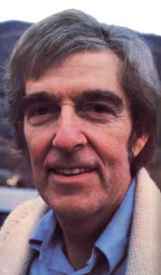
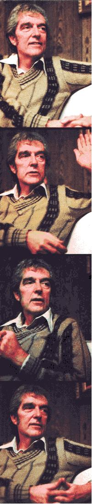

Following this magazine's interview with Dr. Harold W. Manner, we received innumerable letters and phone calls. Much of that correspondence was from readers who hadn't known of the healthcare possibilities offered by nutrition therapy until they read about the Manner program in our pages, but a surprisingly large number of folks called to let us know that there are other revolutionary researchers who are "curing" degenerative diseases such as cancer. And the greater part of these "tips" suggested that MOTHER look into the work being done at Dr. William Donald Kelley's Winthrop, Washington clinic.
The information that we received from our readers raised a few questions, too: How, for instance, did Dr. Kelley-an orthodontist by training-come to develop the concepts of metabolic subtyping and non-specific metabolic therapy . . . ideas which won him the International Association of Cancer Victims and Friends "Humanitarian Award " and recognition from such lofty "alternative" medical organizations as San Diego's Price-Pottenger Foundation?
In order to find the answers to these questions-and to learn more about Dr. Kelley's reputation for providing successful treatments for a number of "incurable" diseases-MOTHER contributor Cameron Stauth traveled to the former dentist's clinic high in Washington's Cascade Mountains.
The edited transcript that follows-which summarizes more than three days of discussion-presents a picture of a man who has made it his life's work to explore the frontiers of medicine . . . those unexplored areas where risks must be taken and, sometimes, breakthroughs are made.
PLOWBOY: Dr. Kelley, when I arrived in Winthrop I must have walked around the block three or four times . . . trying to spot a buildingimposing enough to be a research clinic. I couldn't believe that this little house was your office!
KELLEY: That's a pretty common reaction. People come here-from all over the world-and they expect us to be sitting at the end of the rainbow . . . in a huge complex of white-pillared buildings with half a dozen research centers scattered around the grounds.
Some of those folks are disappointed at first. I think, however, that many of our visitors learn more from this humble office than they do from whatever I may say. Such people look around, and they don't see a multimillion dollar establishment with posh waiting rooms, so they ask themselves, "Where is the healing going to come from?"
And the answer to that question-as my patients soon learn-is that health can only come from within their own bodies.
PLOWBOY: That's a radical concept . . . especially so in this age of high-technology medicine. How did you develop your unorthodox ideas about healing?
KELLEY: I suppose I got many of my health-care notions from the country doctors who used to visit my childhood home in Kansas. Those physicians cared about their patients . . . they wouldn't take drastic, invasive measures unless such steps were absolutely necessary, and they often got incredible results without resorting to "the knife". I was fascinated by the country M.D.'s and spent as much time talking to them as their busy schedules would allow.
I also-while I was still quite young-convinced the local Red Cross chapter to let me take its entire battery of first-aid courses . . . even though I wasn't old enough to be formally admitted to the classes.
By absorbing all of the health-care information I could, I built up enough know-how to later get myself admitted to the Navy's medical corps. I worked with a great number of physicians while I was in the service, and was most impressed by those men and women who paid as much attention to the causes of a problem as they did to what medication might alleviate the symptoms.
I left the Navy at the end of the second world war and enrolled in a pre-med college program, majoring in biochemistry with minors in biology and physiology. I originally hoped to become an M.D., but-for a number of reasons-never went on to med school. In retrospect, I'm glad that I didn't become a physician, because the brainwashing involved in such training would probably have kept me from recognizing the value of the "new" nutritional concepts that I'm involved with today.
It was my dentist brother who talked me into applying to dental school. I took an aptitude test at Baylor University in 1949, got the highest grade any dental school applicant had ever made, and decided that maybe I was cut out to be a tooth doctor!
During my four years in dental school I worked, part time, as a hospital electrocardiac technician. I'd handle that job from 5 p.m. to 11 p.m., do private duty nursing from 11 p.m. till 7 a.m. . . . and then try to grab a little bit of sleep between classes. I was a typical ambitious young man.
My specific goals, however, were somewhat unusual. I've always had a yen to teach-I earned my M.S. in education while I was pursuing my dental degree-and my ambition was to improve the quality of this nation's dental schools. You see, though I am a Texas hillbilly at heart, I've always thought on a grand scale!
At any rate, I discovered that no one in the dental training field held both a Ph.D. in education and a degree in dentistry. Most dental school deans-then and now-are men or women who were unable to succeed in private practice . . . and, of course, the unfortunate dentists who can't even make it in education have no choice but to become executives in the American Dental Association!
To return to the subject at hand, though, my entire class was required to take a course in nutrition from a government educator. Most of my fellow students laughed their fool heads off during that class, but I fell for the nutrition idea hook, line, and sinker. I've always been more interested in causes than in remedies, and the nutritionist explained how poor diets could actually cause cavities. Her points made perfect sense to me, and I began to study nutrition on my own.
PLOWBOY: Did you go into practice after graduating from dental school?
KELLEY: Yes, I opened up my office in 1954 and-over the next two years-finished the course work for my doctorate in education under a Department of Health, Education, and Welfare postdoctoral fellowship.
At that same time, the bigwigs at HEW offered me a position as director of a new curriculum program that would affect all the dental schools in the country. Unfortunately, it turned out they wanted to get a dentist into every grade school in the United States . . . and- though the goal was laudable enough-they hoped to accomplish this by cutting the standard dental education down to a two-year degree, so they could massproduce dentists. I, on the other hand, wanted to upgrade the program . . . so dentists would be real doctors rather than mechanics with doctoral degrees. In the end I refused to do the job that HEW wanted, and they eventually let the idea die.
The experience shook me up, though, and made me reexamine the feasibility of my dream to improve the quality of dental education.
I began to practice orthodontics in 1958, and my interest in prevention reemerged. I was shocked, for instance, by the numbers of children who came into my office with crooked teeth. The standard orthodontics "line"-which implies that the young people inherit such misaligned teeth-goes something like this: "Johnny has Daddy's big teeth in Mommy's little jaw." That approach makes the parents feel guilty and allows them to assuage that guilt by spending thousands of dollars to put bands and wires into their sons' and daughters' mouths.
I doubted that crooked teeth were in any way hereditary, and I was also disturbed by the manipulative nature of implying that they are inherited. So I continued studying and eventually discovered the work of Dr. Francis M. Pottenger and Dr. Weston A. Price, who wrote a classic book-called Nutrition and Physical Degeneration-about the sound dental structure and lack of degenerative disease found in many "primitive" societies. The ideas advanced by these two men-and others-really turned my thinking around. In fact, I still feel that Dr. Pottenger's and Dr. Price's writings should be required reading for anyone involved in the healing arts.
PLOWBOY: Did you, at that time, begin to incorporate nutritional ideas into your practice?
KELLEY: Right. All my studying and all the theories I'd been working on began to come together . . . into a "big picture" that I could actually use clinically.
And, in the early days of my orthodontic practice, my oldest daughter came down with a number of allergic and asthmatic problems. The standard allergy injections didn't seem to bring her much relief, so I developed a nutritional program for her that really did help.
In addition to that, however, my wife took the girl to a chiropractor. Of course, the visit was made without my knowledge, because-back then-I was orthodox enough to think that all chiropractors were quacks. The man was able to help control my little girl's asthma, however, and I lost one more bit of my professional prejudice.
It's important to realize, though, that-while I had worked out a nutrition program to deal with my daughter's allergies-I was still limiting myself to the standard allopathic, or antidisease, approach . . . that of giving a "pill" to kill a specific symptom.
The next big step in my "education" occurred in 1962 . . . when I began to feel miserable. At first I thought I was having a series of heart attacks, yet-though the situation got worse and worse over the next few years-my doctors couldn't locate any problems! Finally, in 1964-after I'd gotten so drained that I had to rest between dental patients-one of the physicians discovered malignant lumps on my liver and pancreas.
He told my wife I only had two months to live, and she let me know of my condition a month later! I also found out that the internist wanted to perform surgery, but the surgeon in charge of the case felt that I'd die on the operating table if the attempt were made. In effect, he told me to get my affairs in order.
My internal organs were so shot that most food would make me violently ill. I started altering my diet to try to keep my strength up, and-because I'd learned about such things during my medical training-began taking massive doses of pancreatic enzymes . . . in order to support my pancreas enough to allow me to eat. I wanted to at least die on a full stomach!
Anyway, I gradually worked out a pro gram for myself, and to and behold . . . I started getting well! I refined the procedure as I went along and eventually-in 1967-wrote about the results in my book, One Answer to Cancer.
PLOWBOY: After you'd recovered from your disease, did you begin recommending nutritional programs to others?
KELLEY: Well, I'd been advising nutritional changes for some of my orthodontics patients even before my cancer was diagnosed. And other folks heard about my success in treating my daughter's asthma and allergies, so those people sometimes asked me for advice on similar problems, too. In fact, I was known as the "asthma doctor" of Midland, Texas.
Once I'd recovered from my illness, however, I began to tell other people who had cancer how I'd healed myself. Some of those men and women were intrigued with my advice, applied it to their own cases, and recovered! So, very gradually-the process stretched out over a number of years-I got to the point where I was regularly recommending lifestyle programs to patients with serious degenerative diseases.
PLOWBOY: Can the fact that you've been able to help people cure a range of illnesses-from asthma to cancer-be attributed to what you now call "non-specific metabolic therapy"?
KELLEY: Yes it can, and non-specific metabolic therapy is the only healing concept I apply. The technique is based upon the assumption that-if a person gives his or her body all the nutrients it needs, relieves its structural problems, stimulates the glands to do their jobs, cleans out any accumulated toxins, and maintains the proper mental and emotional states-the body will be able to handle all sorts of problems . . . especially such degenerative diseases as cancer, heart disease, arthritis, and so on.
This method is, of course, the antithesis of conventional specialized medicine . . . which tries to isolate problems and treat them one at a time. But such accepted means of "doctoring" are, I think, based upon a false premise: that the systems of the body function more or less independently, rather than in complete and continual dependence upon one another.
The human body is an amazingly adaptable organism. If all of a person's organs are working at anywhere near 100% efficiency, the body chemistry can rebalance itself to eliminate almost any disease.
The only really effective way to treat an illness is to build health. The allopathic approach that's so common today is, at best, a temporary solution.
PLOWBOY: Would you describe your nonspecific therapy as anew concept?
KELLEY: Not totally new, no. As I mentioned before, the old-time family doctors did try to cater to their patients' total well-being and were able to do so because they knew the family members and treated them over a long period of time . . . sometimes through several generations. Those physicians, however, were still mostly disease-oriented. It's only been within the last five years that doctors have begun to use health-stimulating biochemical information in actual practice.
In reality, though, non-specific metabolic therapy does represent a kind of return to the past. It's an example of the classic methods of healing-as advocated by Hippocrates-that have been shoved aside in this century.
PLOWBOY: What diseases respond most readily to non-specific therapy?
KELLEY: We've had our most dramatic successes with the degenerative illnesses ... cancer, heart disease, arthritis, diabetes, chronic fatigue, multiple sclerosis, and so forth. Such diseases are caused by a gradual wearing down of the immune processes and metabolic pathways. Sudden traumatic illnesses or accidents don't respond as well to our program . . . though people who have been under nonspecific metabolic therapy tend to avoid illness and to recover quickly from either sickness or injury.
PLOWBOY: Haven't you also encountered cases in which a person was cured of multiple illnesses by going through a single metabolic program?
KELLEY: It happens all the time. The fact is that it's very difficult to be in poor health in just one part of your body. I can think of one man, for example, who came to us with psoriasis, cardiovascular problems, and cancer. The latter disease finally forced him to deal with his poor health . . . and as that cleared up, his other illnesses went away, too!
PLOWBOY: Dr. Kelley, did your early medical training make it difficult for you to accept the concept of non-specific metabolic therapy while you were first working the idea out?
KELLEY: I have to admit that it did seem hard to believe at first. I had the feeling-as do most medical practitioners-that I was a member of the best-trained group of professionals in the world. I wanted to think that if my methods couldn't solve a problem, nothing would.
Then, even after I became involved in nutritional care, I went through a phase of wanting to treat specific problems with a specific vitamin/mineral combination. It took about three years for me to grasp the entire concept of building health.
PLOWBOY: How did the "specialty medi cine" concept become so widely accepted that alternatives seem to be shoved aside without adequate evaluation?
KELLEY: I think the idea was originally based upon the theory that a number of specialists-working independently-could find more solutions to specific problems. Of course, the concept meshed well with the accepted procedures of crisis medicine, and with the allopathic concept of treatment to eliminate disease rather than to promote health. And, finally, specialty medicine is very profitable. The only big problem with this medical system is that it does not work . . . people are not getting well at the doctor's office.
PLOWBOY: Is there a strong resistance to nonspecific metabolic therapy among "conventional" doctors?
KELLEY: There has been, but I think that situation is changing. Doctors are always, and often rightly so, reluctant to accept new ideas. However-with the health of the American people worsening at an observable rate, and with health care costs rising daily-there seems to be a greater willingness among physicians to look into alternative therapies.
PLOWBOY: Have your ideas also met with resistance in wholistic medical circles?
KELLEY: Yes, in fact we've encountered more suspicion from "alternative" practitioners than we have from "traditional" M.D.'s. Some of the wholistically oriented folks have gotten to the point of using vitamins in place of traditional medications . . . and these people often treat that "discovery" like a new religion. Consequently, when someone is critical of the vitamins-to-match-the-symptoms approach-as anyone explaining non-specific metabolic concepts would be-the criticism is thought of as blasphemy!
Too many of today's "alternative" practitioners are interested-whether they would admit it or not-in simply getting their patients into a symptomfree condition. That's where they quit . . . without realizing that the overall problem is likely far from being solved. What we're interested in, on the other hand, is getting people out of a pathological symptom range and into a state of vital, vibrant health!
PLOWBOY: Is the general state of health in the United States vital and vibrant?
KELLEY: Are you kidding? Ninety-nine percent of this nation's population can't even conceive of what good health is like! In our culture you're considered healthy if you're warm and moving and don't have a runny nose.
PLOWBOY: But aren't our young people somewhat healthier than the national average might indicate?
KELLEY: To tell the truth, I'd rather treat someone who's over 60 than a patient who's under 30! I really believe that a great number of our young adults won't live to be 50 . . . they've grown up in a convenience-foodconsuming, sedentary, polluted, drug-oriented, and anxiety-ridden culture . . . and that lifestyle has already begun to take its toll.
Worse yet, since about 1945 the huge agribusiness corporations have totally controlled food production, and millions of people no longer eat even a bit of nutritious food on any given day.
PLOWBOY: But there has been a renaissance of health awareness in the past few years. Hasn't this trend had a positive effect?
KELLEY: At least it proves that people are getting the right idea, although they're often not actually able to apply it. The trouble is that most folks have no complete integrated approach to health. Many of even the more nutritionally aware men and women are influenced by a mishmash of conflicting theories. And the problem is compounded by the fact that some people's bodies are so destroyed that they can't even metabolize the granola and vitamin C they're gulping down.
PLOWBOY: Can your program help an individual determine exactly what sort of nutrition program his or her body needs and will be able to use?
KELLEY: Yes, it can. We've developed a means of analyzing the state of a person's health. Our technique incorporates questionnaire books and a series of thorough blood tests. All of the information is synthesized and analyzed by computers which we have here in the office.
We can determine, first of all, how well a person's body is functioning. Then we isolate the specific vitamin or mineral deficiencies and recommend the steps necessary to correct such "shortages". The questionnaires cover every facet of lifestyle, diet, health history, and so forth.
The test is also designed to compensate for the problem of subjective misinterpretation. With the complete analysis, we can spot problems before they become serious illnesses.
PLOWBOY: But you don't actually treat people for specific ailments, do you?
KELLEY: No, we only accept patients whose physicians have requested-in writing-that we construct a lifestyle change for the person in question. We set up a program, and the patient can go home to follow-under the care of his or her own doctor-the recommendations that we provide.
PLOWBOY: So the patients themselves are responsible for following through on their therapies?
KELLEY: Of course, health is always up to the individual. The myth that a doctor or hospital can create physical well-being is on the way out.
PLOWBOY: So your work isn't actually directed toward cancer or any specific disease state?
KELLEY: No, it's not. We do, of course, recognize the illnesses that our patients arrive here with, but we don't focus on any disease to the exclusion of the sick person's total state of health. Once you go beyond disease to a program for health, the body can take care of whatever specific problems it may have. We're interested in the patient who has the disease, rather than in the disease that has the patient.
PLOWBOY: But specific illnesses do respond to your non-specific metabolic treatment?
KELLEY: Oh yes. We've never run a formal statistical analysis, but we retest our patients every six months to see how they're doing, so I have a pretty fair idea of what sort of success ratio we've been able to maintain.
With cancer victims-even the ones whose disease has metastasized-we can expect a five-year survival rate of well over 50% . . . which is, of course, much better than that of conventional radiation and chemical therapy.
We are also able to reverse conditions that are supposedly irreversible . . . a th erosclerosis, for example, and diabetes or arthritis. It has been assumed that-because such diseases don't respond to pharmaceutical drugs or surgery-the illnesses are "untreatable". That's ridiculous! The body has the response mechanisms to reverse these conditions.
The medical community is only beginning to understand the capabilities of the human immune system. For example, the surveillance theory of cancer-which holds that the body's immune mechanisms can kill malignant cells-has only become widely accepted in the past five years. Until that time, the dogma was that nothing but outside forces-such as surgery, radiation, or chemotherapy-could eliminate the disease. cells.
PLOWBOY: Would you agree with the many wholistic-care spokesmen and women who claim that conventional cancer therapies sometimes do more harm than good?
KELLEY: Yes, I would. Such treatments can be quite debilitating. In fact, I think that anyone who chooses to undergo a conventional cancer therapy would do well to go on a nutritional program-like ours-for a few weeks prior to the treatment . . . just to build up enough strength to enhance his or her chances of survival! Of course, many people who would do so might begin to show improvement and decide to stay with nontoxic therapy. Others, of course, would still opt for the orthodox route . . . lots of folks are only happy when they've put their problems in somebody else's hands.
Most of us would like to pretend that degenerative illnesses can exist in isolation from their victims' attitudes, emotions, and habits . . . we want a magic pill to end the problem. Now I don't think people should feel guilty about having created their diseased conditions-because guilt is a nonproductive emotion-but no one is going to beat a degenerative illness without understanding how he or she participated in getting sick in the first place. Cancer and heart disease, for example, don't just drop down from the sky . . . such illnesses are a long time in building up and are inextricably tied to the way that the person who contracts them lives. The man or woman's lifestyle has to be changed if the disease is to be beaten. And the patients who take responsibility for their health can recover!
But-although we have had many successes in reversing the progress of de generative illness-we're even more concerned with conditions that we can keep from ever reaching a crisis state. That's the area we really shine in . . . although there's no way to produce firm statistics on the number of diseases we've prevented.
PLOWBOY: Tell me about the programs that you devise for your patients.
KELLEY: In the first place, we have to influence the body's metabolism-its energy exchange with the environment-and this can only be accomplished through a nearly total change in lifestyle.
Each patient receives a different program, based on his or her needs. The recommendations include diet, supplements, detoxification, structural therapy, emotional counseling, and often physical exercise.
Some of our diets, for instance, are primarily vegetarian . . . while others include large amounts of meat. After all, an appropriate diet, for any given person, will depend upon that man's or woman's metabolism. Some people can digest meat easily, while other folks can't metabolize it at all. This commonsense truth really bothers a lot of "health fad" people. In fact, when I began recommending nutritional therapies, I thought vegetarianism was the perfect approach for everybody. How naive! No single diet can be just right for everyone!
Our various nutritional programs do have several factors in common, however. They're all nutritionally balanced, and all based upon fresh, organically grown fruits, vegetables, and meats . . . raw milk . . . whole grains . . . and distilled water.
PLOWBOY: I understand that the vitamin supplements in your programs can cost as much as several hundred dollars a month. That must amount to quite a lot of pills!
KELLEY: You bet it does! The number of supplements is reduced, however, as the patient regains his or her health. And, although a few hundred dollars a month is a heavy expense, it's miniscule compared to the cost of even a short stay in a hospital. In addition, the supplements we prescribe are powerful tools that can, indeed, keep a person out of the hospital. The vitamins, minerals, and so on stimulate, support, and-in some cases-even substitute for vital organs . . . they help the immune system do its job!
One of the reasons these materials are effective is that they're not bargain-basement synthetic vitamins but whole food products-like wheat germ oil or brewer's yeast-which contain all of the cofactors necessary to produce a synergistic effect that isolated vitamins can't equal.
Most important, however, is the fact that the supplements help people metabolize their food. Remember, you are not what you eat . . . you are what your cells metabolize!
PLOWBOY: Does your program involve anything more than personalized diets and supplements?
KELLEY: Of course. One of the most important parts of our program is detoxification . . . which consists of high-colonic coffee enemas, purges of the gall bladder and liver, and-to a lesser degree-controlled sweating, dry skin brushing, and bathing.
When a body begins to regenerate itself, the cell turnover accelerates, and trillions of dead cells are sloughed off into the system. It's necessary to speed up the body's elimination of this "waste" tissue, or the patient will likely feel ill.
Coffee is used in the high enemas because it cleans the colon wall-which prevents the reabsorption of toxic material and enhances the wall's ability to absorb minerals-and also stimulates the liver. You see, the caffeine enters the liver through the portal vein and causes the organ to throw more toxins into the bile system. The enemas also increase insulin output . . . which makes the cell walls more permeable and better able to absorb nutrients.
PLOWBOY: You've said-in your public presentations-that degenerative disease is approaching an epidemic stage in the United States. Do you believe this country's collective lifestyle will have to change before such a "plague" can be stopped?
KELLEY: Yes, and epidemiological studies have proved that point beyond any reasonable doubt. Other nations don't have-as we do-degenerative disease showing up at some point in the lives of three out of every four of their citizens . . . and such illnesses weren't so prevalent here, either, before our land became highly industrialized.
Of course, we can't eliminate industrialization, but we must attempt to refine it . . . and accept the fact that there are no shortcuts to health.
As I see it, the key to turning our degenerative disease epidemic around involves a return to individual self-reliance. If we can each assume responsibility for our own health-that is, if we can improve our inner environments-then the changes that are necessary in the outside world will be much more easily accomplished.
PLOWBOY: And have you taken steps to spread this message around?
KELLEY: Yes. A few years back I helped form an association called the Nutritional Academy-a network of doctors and lay counselors-to carry such ideas nationwide. The Academy administers our tests, offers regular seminars to train additional physicians and lay personnel in our techniques, and publishes the Journal of the Nutritional Academy. The journal isn't filled with the "take this vitamin for that disease" advice that characterizes most wholistic health magazines, but instead presents articles that reflect an integrated body of knowledge . . . and tell people how to become well and how to stay that way!
PLOWBOY: One would think that your private practice, your work with the academy, and your contributions to the organization's magazine would keep you quite busy . . . yet I know you're involved in other projects as well.
KELLEY: That's right. I'm in the process of rewriting One Answer to Cancer . . . I hope to incorporate-in the new edition-all the information that I've picked up over the last 12 years. And, of course, the most important project is our experimental farm.
PLOWBOY: Can you tell me about that undertaking?
KELLEY: Certainly. We have a 160-acre working farm . . . complete with facilities for studying more healthful ways to produce and preserve food.
If we're ever going to get people healthy in this society, we'll have to find ways to provide them with proper nutrition. Unfortunately, the agribusiness and processing industries have little interest in producing goods that will make people healthy. Such firms couldn't care less about the food value of their products . . . although they often pay lip service to nutrition in their advertising and packaging campaigns. You can, for instance, go down to most any grocery store and buy "natural granola" now . . . but in most cases it will be the same old junk cereal with a different label. And some of the "health food stores" are just as unreliable as are the supermarkets!
PLOWBOY: So your farm will attempt to demonstrate alternatives to such over-processed and valueless foods?
KELLEY: That's the idea, but we can only set an example . . . and even that will take a long time. We've laid out a 30year program which begins with building up the soil to the point where it'll con tain the proper nutrients, have the correct bacterial and earthworm balances, and so forth. At the same time we're trying to find ways of preserving, transporting, and storing foods . . . methods that won't destroy most of the real nourishment in the substances.
We've found that much of the information that is available on nutritional food processing has been carefully ignored. If the major companies can save one cent in production costs by destroying half the nutrients in their products, you can bet that those firms will go after the penny! We need to gather information that will enable us to prove how much of our food's value is being destroyed . . . and to demonstrate how that destruction affects the health of all of us.
PLOWBOY: That goal will take some time to accomplish. At what stage of development is your farm today?
KELLEY: We have our large processing building . . . a number of livestock barns . . . about 40 acres of vegetable gardens . . . some acreage in grain, pasture, and alfalfa . . . several berry patches . . . and an orchard. Everything is grown wholistically on virgin soil.
PLOWBOY: You've certainly come a long way from your medical beginnings as a Texas dentist, Dr. Kelley. Can you try to summarize that "journey" for me . . . and tell me what the future might hold?
KELLEY: That's a big order, but I'll take a stab at it:
When I began what I like to think of as my search for truth, I just wanted to find a little bit of it . . . enough to make me feel comfortable and believe I was doing something worthwhile. In the beginning, I thought health could be won easily. I figured we could all live happily ever after on cola and vitamin tablets . . . and I knew that was the type of program most patients would want.
But I had to look at myself in the mirror every day, and so I pushed on farther and farther down the road. Finally, of course, I found myself getting "back to basics" . . . setting up the farm to actually grow and preserve good, solid food.
We're doing nothing more than providing the means for a transition. Our nonspecific metabolic therapy can get people out of the pathology range so they can work in their own gardens and metabolize the food that they grow. In the final analysis, however-after we've taught our patients everything we can-good health is up to the individual . . . all alone in the garden, working with his or her own hands.
|
 |
 |
|